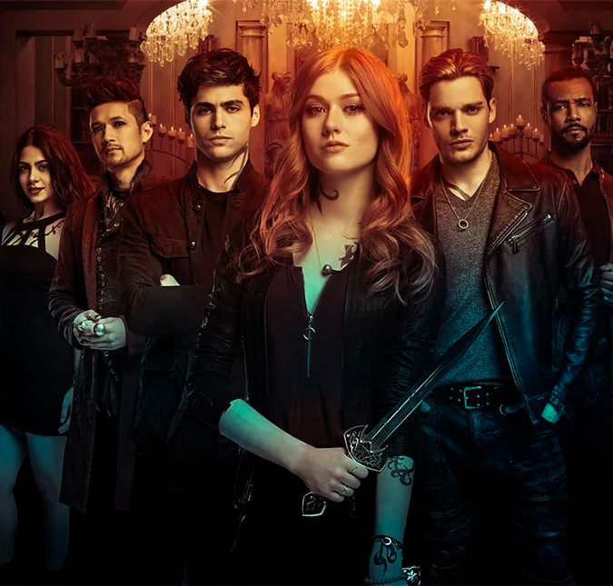

A série é uma segunda adaptação, em 2013 foi lançado Os Instrumentos Mortais: Cidade dos Ossos, infelizmente o filme não foi um grande sucesso, mas as obras literárias eram tão boas que merecia uma segunda adaptação assim surgindo Shadowhunters. Em 12 de janeiro de 2016 a série estreou nos Estados Unidos pelo canal FreeForm e em março de 2016 foi anunciado a renovação da segunda temporada.
Clary Fray uma jovem que leva uma vida normal e tranquila até completar 18 anos e descobrir que é uma Caçadora de Sombras. Nessa mesma noite, Clary acompanha o melhor amigo, Simon Lewis, em um show da sua banda e acaba esbarrando com Jace Wayland na entrada de uma boate. O engraçado que somente Clary consegue ver o jovem. Intricada, ela entra na boate atrás do rapaz, mas o que ela vê em seguida parece mais um filme de terror, três jovem lutando contra seres sobrenaturais.
Desesperada com esse mundo desconhecido ela foge do lugar, ao chegar em casa ela conta toda a história para sua mãe. Jocelyn Fray até tenta explicar a filha que isso faz parte de quem eles são, mas é impedida por Caçadores de Sombras que trabalham para Valentine, um antigo Shadowhunter que criou seu próprio “Circulo” para exterminar o mundo das sombras.
Por um portal, Jocelyn manda a filha para longe, mas acaba sendo raptada pelos capangas de Valentine. Clary para na delegacia onde Luke, que sempre representou uma figura paterna trabalha, porém sua confiança é traída após ouvir sua conversa com outros caras.
Sozinha Clary tenta voltar para casa, mas ao chegar é surpreendida por um demônio que a ataca, entretanto ela é salva por Jace que a leva para o Instituto, o lugar onde os Shadowhunters moram e lá ela descobre sua verdadeira identidade. Agora vivendo entre vampiros, lobisomens, fadas e feiticeiros, Clary começa uma busca pela mãe e respostas de uma infância construída na base da mentira. Isabelle e Alexander Lightwood são irmãos e completa o quarteto de Shadowhunters que ajudará Clary na procura de Jocelyn, junto com seu amigo Simon que se envolverá totalmente nesse mundo das sombras.
Enfim, Shadowhunters é incrível, e mesmo que você não tenha lido a obra original, vai se apaixonar por essa série. Por isso eu indico que você começa assistir. Netfix disponibiliza todos os episódios.
